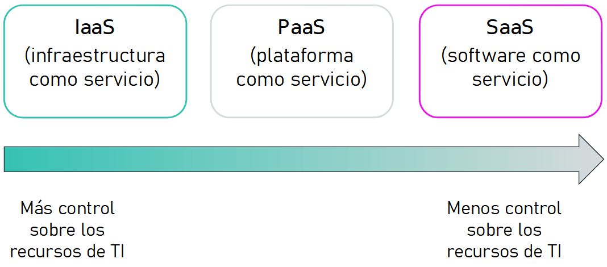

Cloud Computing¶
La Nube¶
Ya hemos visto que la industria 4.0 incluye el Big Data y la computación en la nube como uno de los elementos principales de su transformación.
El Cloud Computing permite obtener servicios de computación a través de internet que hace que sólo se pague por los recursos que usa y en el momento en que los necesita. Dicho de otro modo, es la entrega bajo demanda de potencia de cómputo, bases de datos, almacenamiento, aplicaciones y otros recursos informáticos, a través de Internet con un sistema de precios de pago por uso.
Los modelos productivos basados en la adquisición de hardware de manera propietaria ha quedado atrás, al implicar un proceso largo y costoso de compra de licencias, recursos físicos como oficinas y equipamiento y recursos humanos (tanto técnicos como de seguridad) para su implantación, gestión y mantenimiento.
Así pues, plantea un cambio de perspectiva. La infraestructura se deja de considerar hardware para verla (y usarla) como software.

Ventajas¶
Así pues, los beneficios que ofrece la nube son:
- Alta disponibilidad, dada su naturaleza de recursos distribuidos.
- Escalabilidad: Si un usuario necesita más o menos capacidad de proceso o de almacenamiento, el proveedor se lo facilitará prácticamente en tiempo real.
- Tolerancia a fallos, ya que ofrecen una arquitectura de respaldo de copias de seguridad y a prueba de ataques.
- Elasticidad: de la misma manera que podemos escalar, podemos reducir los requisitos y buscar soluciones más económicas.
- Alcance global: cualquier usuario autorizado puede acceder o actualizar información desde cualquier lugar del mundo, en cualquier momento y mediante cualquier dispositivo.
- Agilidad: Permite amoldar los recursos al crecimiento de la empresa/proyecto.
- Capacidades de latencia del cliente, pudiendo elegir cómo de cerca se despliegan las aplicaciones.
- Cálculo de costes de manera predictiva, siguiendo un modelo basado en el consumo. Sólo se paga por los recursos que se utilizan, para ello se proporciona el precio de cada recurso por hora.
Una de las ventajas más interesante para las empresas puede que sea la reducción de los costes, ya que no necesitamos instalar ningún tipo de hardware ni software, ni pagar por las actualizaciones futuras en términos de ese hardware y software que ya no vamos a necesitar o que se ha quedado corto para nuestras necesidades.
En relación con los costes, es conveniente aclarar dos conceptos relacionados con la contabilidad y las finanzas: CapEx y OpEx.
CapEx vs OpEx¶
Hay dos tipos diferentes de gastos que se deben tener en cuenta:
- La inversión de capital (CapEx) hace referencia a la inversión previa de dinero en infraestructura física, que se podrá deducir a lo largo del tiempo. El coste previo de CapEx tiene un valor que disminuye con el tiempo.
- Los gastos operativos (OpEx) son dinero que se invierte en servicios o productos y se factura al instante. Este gasto se puede deducir el mismo año que se produce. No hay ningún costo previo, ya que se paga por un servicio o producto a medida que se usa.
Así pues, si nuestra empresa es dueña de su infraestructura, comprará equipos que se incluirán como recursos en su balance de cuentas. Dado que se ha realizado una inversión de capital, los contables clasifican esta transacción como CapEx. Con el tiempo, a fin de contabilizar la duración útil limitada de los activos, estos se deprecian o se amortizan.
Los servicios en la nube, por otro lado, se clasifican como OpEx debido a su modelo de consumo. Si nuestra empresa utiliza la nube, no tiene ningún recurso que pueda amortizar, y su proveedor de servicios en la nube (AWS / Azure) administra los costos asociados con la compra y la vida útil del equipo físico. En consecuencia, los gastos de explotación tienen un impacto directo en el beneficio neto, la base imponible y los gastos asociados en el balance contable.
En resumen, CapEx requiere unos costes financieros previos considerables, así como unos gastos continuos de mantenimiento y soporte técnico. En cambio, OpEx es un modelo basado en el consumo, y los gastos se deducen en el mismo año.
Así pues, la informática en la nube es un modelo basado en el consumo, lo que significa que los usuarios finales solo pagan por los recursos que usan. Lo que usan es lo que pagan.
Volviendo a las ventajas, los modelos basados en el consumo y OpEx aportan una serie de ventajas:
- Sin costes por adelantado.
- No es necesario comprar ni administrar infraestructuras costosas que es posible que los usuarios no aprovechen del todo.
- Se puede pagar para obtener recursos adicionales cuando se necesiten.
- Se puede dejar de pagar por los recursos que ya no se necesiten.
Coste total de propiedad¶
El coste total de propiedad (CTO) es la estimación financiera que ayuda a identificar los costes directos e indirectos de un sistema. Permite comparar el coste de ejecutar una infraestructura completa o una carga de trabajo específica en las instalaciones del cliente frente a hacerlo en la nube.
Los elementos a considerar sobre el coste total de propiedad son:

Cuando migramos a una solución en la nube, por ejemplo AWS, los únicos costes que deberemos pagar son:
- Costes de computación (procesador, memoría): se factura por horas o por segundos (sólo máquinas Linux)
- Costes de almacenamiento: se factura por GB
- Costes de transferencia de datos: se factura por GB de salida (excepto casos excepcionales, los datos de entrada no se facturan)
Así pues, es necesario presupuestar y desarrollar casos de negocio para migrar a la nube y ver si son viables para nuestra organización. Para ello, podemos utilizar la calculadora de costes que ofrecen las plataformas cloud:
- AWS: https://calculator.aws y en concreto en https://calculator.s3.amazonaws.com/index.html
- Azure: https://azure.microsoft.com/es-es/pricing/tco/calculator/
- Google Cloud: https://cloud.google.com/products/calculator?hl=es
Estas calculadoras permiten:
- Calcular los costes mensuales.
- Identificar oportunidades para reducir los costes mensuales.
- Utilizar plantillas para comparar servicios y modelos de implementación.
Servicios en la nube¶
Los servicios en la nube son servicios que se utilizan a través de Internet, eliminando las limitaciones de nuestros equipos. Su principal ventaja es que su CapEx es 0, no necesita ningún tipo de inversión inicial ni contrato a largo plazo.

Todo
REVISAR Definición y diferencias. Apuntes Azure https://www.ibm.com/es-es/cloud/learn/cloud-computing-gbl https://docs.microsoft.com/es-es/learn/modules/fundamental-azure-concepts/categories-of-cloud-services
IaaS¶

La infraestructura como servicio (Infraestructure as a Service) proporciona a las empresas recursos informáticos, incluyendo servidores, máquinas virtuales, redes, almacenamiento y espacio en centro de datos con pago en función del uso.
Los elementos que forman parte de IaaS son:
- Servidores y almacenamiento.
- Firewall y seguridad en red.
- Planta física o edificio del centro de datos.
Se contrata el hardware y el cliente es el responsable de la instalación y mantenimiento del software que corre en dichas máquinas. Configurar una máquina virtual nueva es considerablemente más rápido que obtener, instalar y configurar un servidor físico.
PaaS¶

La plataforma como servicio (Platform as a Service) proporciona un entorno basado en cloud con todos los requisitos necesarios para dar soporte a todo el ciclo de vida de creación y puesta en marcha de aplicaciones basadas en web (cloud), sin el coste y la complejidad de comprar y gestionar el hardware, software, aprovisionamiento y alojamiento necesario.
Los elementos que forman parte de PaaS son todos los de IaaS más:
- Sistema operativo
- Herramientas de desarrollo, administración de bases de datos, análisis empresarial, etc...
Este enfoque acelera el desarrollo y la comercialización de aplicaciones, ya que desplegar una nueva aplicación es cuestión de minutos.
SaaS¶
Finalmente, las aplicaciones basadas en cloud, o software como servicio (Sofware as a Service), se ejecutan en sistemas en la nube que no tienen porque residir en la misma máquina ni en la misma red. Estos servicios pertenecen y los administran otras empresas a las cuales el cliente se conecta a través de Internet y, por lo general, de un navegador web.
Así pues, podemos considerar SaaS como aplicaciones hospedadas y utilizables dentro de un PaaS.

SaaS permite iniciar sesión y empezar rápidamente a utilizar las aplicaciones desde el minuto 0. Tanto las aplicaciones como los datos son accesibles desde cualquier sistema conectado. Si el sistema fallase, no se pierden datos, ya que al estar en el cloud hay copias de seguridad continuas y al ser tolerante a fallos y elástico, el servicio permite escalar dinámicamente en función de las necesidades de uso.
¿Qué es la informática sin servidor / Serverless computing?
Igual que PaaS, la informática sin servidor permite que los desarrolladores creen aplicaciones más rápidamente, ya que elimina la necesidad de administrar la infraestructura. En las aplicaciones sin servidor, el proveedor de servicios en la nube aprovisiona, escala y administra automáticamente la infraestructura necesaria para ejecutar el código. Las arquitecturas sin servidor son muy escalables y controladas por eventos, y solo usan recursos cuando se produce una función o un desencadenador concretos.
Es importante tener en cuenta que los servidores siguen ejecutando el código. El término "sin servidor" procede del hecho de que las tareas asociadas a la administración y el aprovisionamiento de la infraestructura son invisibles para el desarrollador. Este enfoque permite a los desarrolladores centrar su atención en la lógica de negocio y ofrecer más valor al núcleo de la empresa.
Tipos de arquitectura según la infraestructura¶
Arquitecturas on premise¶
También conocido como in-house es la arquitectura clásica, en la que la empresa adquiere el hardware por adelantado. De esta manera, las empresas tienen el control total sobre los recursos y la seguridad, pero también la responsabilidad respecto a su mantenimiento y actualización del hardware.
Arquitecturas cloud¶
Son aquellas donde los recursos se virtualizan y no son propiedad de la empresa, sino que se pueden aprovisionar y quitar bajo las necesidades de cada momento. Sólo se paga por lo que se consume.
A su vez, podemos distinguirlas entre:
- pública: los recursos virtualizados se comparten de forma pública y entre varios clientes a la vez, permitiendo el acceso via internet.
Los clouds públicos pertenecen y son administrados por empresas que ofrecen a través de una red pública acceso rápido a recursos informáticos asequibles. Con los servicios de cloud público, los usuarios no necesitan adquirir hardware, ni software ni infraestructura de soporte, ya que pertenece a los proveedores y lo gestionan ellos.
Aspectos clave del cloud público
Innovadoras aplicaciones de negocio de SaaS para aplicaciones que abarcan desde la gestión de recursos de cliente (CRM) hasta la gestión de transacciones y analítica de datos IaaS flexible y escalable para servicios de almacenamiento y de informática al instante Potente PaaS para entornos de despliegue y desarrollo de aplicaciones basadas en cloud
- privada: los recursos virtualizados son privados, mediante un cluster dedicado para el cliente, normalmente mediante una conexión privada, ya sea de propia fibra o VPN.
Un cloud privado se trata de una infraestructura que utiliza únicamente una única organización, ya sea gestionada internamente o por terceros y alojada internamente o externamente. Los clouds privados aprovechan la eficiencia del cloud, a la vez que ofrecen un mayor control de los recursos y evitan la multitenencia.
Aspectos clave del cloud privado
Una interfaz de autoservicio que controla los servicios, lo que permite al personal de TI suministrar, asignar y distribuir los recursos de TI on demand de forma rápida Gestión altamente automatizada de agrupaciones de recursos, desde la capacidad informática al almacenamiento, la analítica y el middleware Seguridad y gobierno sofisticados, diseñados para cumplir con los requisitos específicos de una empresa
Arquitecturas híbridas¶
Brindan gran flexibilidad, ya que las empresas deciden donde se ejecutan sus aplicaciones. De esta manera, controlan la seguridad y el cumplimiento o requisitos legales de las mismas.
Un cloud híbrido utiliza una base de cloud privado, combinada con la integración estratégica y el uso de servicios cloud público. En realidad, un cloud privado no puede existir aislado del resto de los recursos de TI de una empresa ni del cloud público. La mayoría de las empresas con clouds privados evolucionarán para gestionar cargas de trabajo en todos los centros de datos, clouds privados y clouds públicos, creando así clouds híbridos.
Aspectos clave de cloud híbrido
Permite que todas las empresas mantengan las aplicaciones críticas y los datos confidenciales en un entorno de centro de datos tradicional o en un cloud privado Permite beneficiarse de los recursos de cloud público como SaaS, para obtener las aplicaciones más recientes y la infraestructura IaaS para obtener recursos virtuales de forma flexible Facilita la portabilidad de datos, aplicaciones y servicios y otras opciones de modelos de despliegue
Arquitectura cloud¶
Las diferentes plataformas cloud ofrecen una arquitectura dividida en regiones y zonas.
Regiones y Zonas de disponibilidad¶
A lo largo de todo el globo terráqueo, se han construido grandes centros de datos que se conocen como regiones. Estas regiones están separadas geográficamente, y dentro de cada una de ellos hay diferentes grupo de centros de datos lógicos que se conocen como zonas de disponibilidad.
Dicho de otro modo, cada región consta de varias zonas de disponibilidad aisladas y separadas físicamente dentro de un área geográfica. Cada zona de disponibilidad tiene alimentación, refrigeración y seguridad física independientes y está conectada a través de redes redundantes de latencia ultrabaja.
Las zonas de disponibilidad permiten que los clientes operen bases de datos y aplicaciones de producción con un nivel de disponibilidad, tolerancia a errores y escalabilidad mayor que el que ofrecería un centro de datos único. Todas las zonas de disponibilidad en una región de AWS están interconectadas con redes de alto ancho de banda y baja latencia, a través de una fibra metropolitana exclusiva totalmente redundante que proporciona una red de alto rendimiento y baja latencia entre las zonas de disponibilidad. Todo el tráfico entre las AZ está cifrado. El rendimiento de la red es suficiente como para llevar a cabo la replicación sincrónica entre las zonas de disponibilidad. Las AZ facilitan la partición de las aplicaciones para una alta disponibilidad. Si una aplicación se divide en AZ, las empresas estarán mejor aisladas y protegidas de problemas como cortes de energía, rayos, tornados, terremotos, etc. Las AZ están físicamente separadas entre sí por una distancia significativa de muchos kilómetros, aunque todas están dentro de un rango de 100 km de separación.
Despliegue¶
Por ejemplo, en el siguiente gráfico podemos ver las 25 regiones que tiene AWS que incluyen 81 zonas de disponibilidad (Se puede observar como la región en España está en proceso de implantación):

Podéis consultar el mapa interactivo de AWS en https://aws.amazon.com/es/about-aws/global-infrastructure/ (y las regiones en https://aws.amazon.com/es/about-aws/global-infrastructure/regions_az/) y de Azure en https://infrastructuremap.microsoft.com/explore.
Plataformas Cloud¶
Heroku
Seguridad¶
Responsabilidad compartida - Azure
Actividades¶
-
Cuestionario de preguntas cortas, tipo test ...
-
Realizar los módulos 1 (Información general sobre los conceptos de la nube) y 2 (Facturación y economía de la nube) del curso ACF de AWS.
-
¿calculadora de costes?